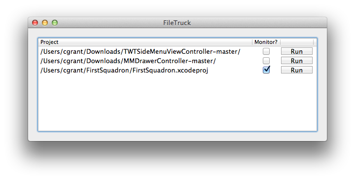

What is FileTruck?
FileTruck is an Xcode plugin that you can use to replicate your Xcode group structure on the file system. For every group in your Xcode project, a directory will be created on the file system, and move all of files in that group into the directory. We built FileTruck for large projects where manually keeping the correct files in directories that correspond to xcode project groups can quickly become unmanageable.
Installation
To install FileTruck, download the Xcode project from GitHub and build it. Restart Xcode, and the plugin will be installed in
~/Library/Application Support/Developer/Shared/Xcode/Plug-insTo uninstall FileTruck, simply remove the FileTruck plugin from that directory.
Usage
To access FileTruck, you use the Xcode Editor Menu. Simply select Editor > FileTruck. You can then use FileTruck in two ways; run once, or monitor.
Run once will replicate your current group structure of your project on the file system, move all of your files into the correct, corresponding directories and then rewrite your Xcode project to point at the correct file locations. If you add files or groups to your project and want these to be in the correct location on the file system, you will have to run it again.
Monitor, on the other hand, when enabled, will monitor your project's group structure. It will continously update the file system to reflect the changes made to your xcode project structure, whether you move a create or move files or groups. To enable monitor, select the checkbox next to the project file path in the FileTruck window.
If your project is not under version control, we strongly recommend that you take a backup of it before enabling monitoring or running File Truck for the first time. Although we have done our best to test FileTruck extensively, due to the many differences and set ups in Xcode projects, we can't guarantee that it will work first time. If you do have a problem, please report an issue.
Authors and Contributors
Built by @chrisgrant and @bobrippling.